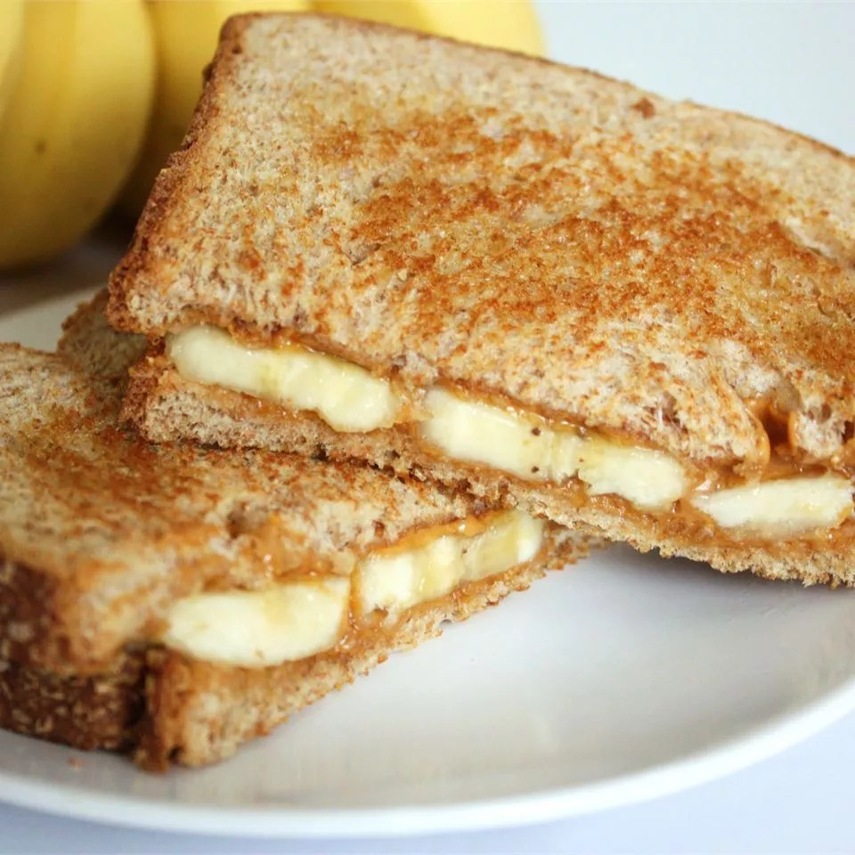

Grilled Peanut Butter & Banana Sandwich

Description
A sweet, warm breakfast idea. Cooked like a grilled cheese,
but filled with melted peanut butter and warm bananas.
Ingredients
- Peanut Butter
- Whole Wheat Bread slices
- Banana
- Cooking spray
Steps
- Heat skillet or griddle on medium.
- Coat it with cooking spray.
- Spread peanut butter on one side of each slice.
- Place banana slices on the peanut butter side.
- Top it with the other side and place it on the griddle.
- Fry on medium for 2 minutes on both sides, until golden.